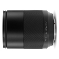

是目前哈苏中画幅系统中最大光圈镜头，具备令人惊叹的焦外虚化效果。为保证该款镜头卓越的焦外光斑表现，避免“洋葱圈”现象的不良虚化，哈苏 XCD 80/1.9 镜头通过复杂而精确的光学设计，创新的校准技术，基于球面镜片，在保持镜头分辨率、色差等方面的极高素质之余，还能达到焦内锐利，焦外柔美的平衡。大光圈下，不仅能带来优异的背景虚化效果，更可营造出柔美的焦外圆形光斑，呈现从锐利对焦区域到优美虚化的流畅转换。小光圈下，依然保持哈苏镜头标志式的八星芒特色。